Statistik1
Daten verbildlichen
Einstieg
Lernziele
- Sie können erläutern, wann und wozu das Visualisieren statistischer Inhalte sinnvoll ist.
- Sie kennen typische Arten von Datendiagrammen.
- Sie können typische Datendiagramme mit R visualisieren.
- Sie können zentrale Ergebnisse aus Datendiagrammen herauslesen.
- Sie können zentrale Prinzipien zur Gestaltung von Datendiagrammen benennen und anwenden.
Einstieg
Benötigte R-Pakete und Daten
Neben tidyverse und easystats benötigen wir in diesem Kapitel ggpubr (Kassambara, 2023) und optional ggstatsplot (Patil, 2021):
Wir arbeiten wieder mit dem Datensatz mariokart (Geldbeträge in Dollar).
Einstieg
Wozu das alles?
Ein Bild sagt mehr als 1000 Worte — Datendiagramme helfen, Erkenntnisse aus Daten zu ziehen, ohne mühsam einzelne Zahlen zu vergleichen.
Unser visueller Cortex ist sehr leistungsfähig: Wir können ohne Mühe viele visuelle Informationen parallel aufnehmen und verarbeiten.
Einstieg
Ein Dino sagt mehr als 1000 Worte
Gleiche Kennwerte, ganz andere Bilder

- Verschiedene Datensätze können (nahezu) identische Kennwerte (Mittelwert, Streuung, Korrelation) haben — und trotzdem völlig verschieden aussehen.
- Fazit: Eine Visualisierung enthüllt oft, was eine Kennzahl verhüllt.
Ein Dino sagt mehr als 1000 Worte
Anscombes Quartett

Vier Datensätze mit fast identischen Mittelwerten, Streuungen und Korrelationen — aber grundverschiedenen Streudiagrammen.
Ein Dino sagt mehr als 1000 Worte
Definition: Datendiagramm
Definition: Datendiagramm
Ein Datendiagramm (kurz: Diagramm) ist ein Diagramm, das Daten und Statistiken zeigt, mit dem Zweck, Erkenntnisse daraus zu ziehen.
Ein Dino sagt mehr als 1000 Worte
Aus der Forschung: ein aufwändiges Datendiagramm

Entwicklungsindex (Lebenserwartung, Bildung, Einkommen) und Korruption auf Landesebene — handwerklich meisterhaft, erstellt mit R.
Ein Dino sagt mehr als 1000 Worte
Grenzen der Dimensionalität

Ein Bild kann nur eine begrenzte Anzahl an Variablen sinnvoll zeigen — vielleicht vier bis sechs. Bei mehr Variablen brauchen wir Statistik statt (nur) Bilder.
Ein Dino sagt mehr als 1000 Worte
Nomenklatur von Datendiagrammen
Eine kleine Nomenklatur
| Erkenntnisziel | qualitativ | quantitativ |
|---|---|---|
| Verteilung | Balkendiagramm | Histogramm und Dichtediagramm |
| Zusammenhang | gefülltes Balkendiagramm | Streudiagramm |
| Unterschied | gefülltes Balkendiagramm | Boxplot |
Einen ausführlicheren Überblick über Diagrammtypen bietet https://www.data-to-viz.com/.
Nomenklatur von Datendiagrammen
Verteilungen verbildlichen
Definition: Verteilung
Definition: Verteilung
Eine (Häufigkeits-)Verteilung einer Variablen \(X\) schlüsselt auf, wie häufig jede Ausprägung von \(X\) ist.
Beispiel: Die Variable cond (Zustand des Artikels) hat 2 Ausprägungen; die Ausprägung new kommt 59-mal vor.
Verteilungen verbildlichen
Verteilung einer nominalen Variable: Balkendiagramm
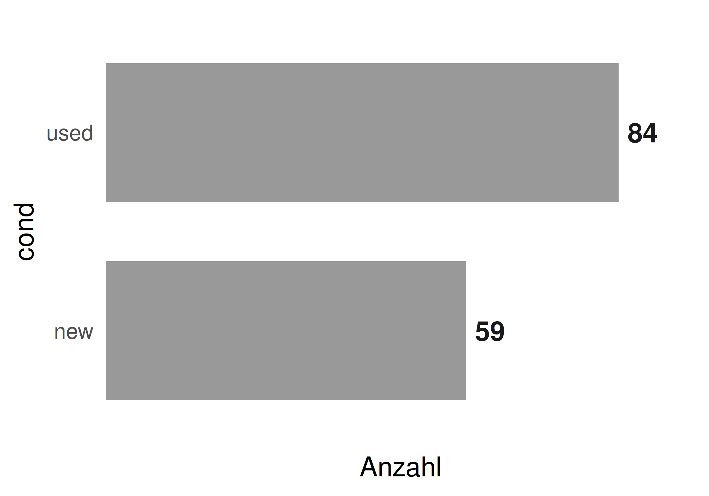
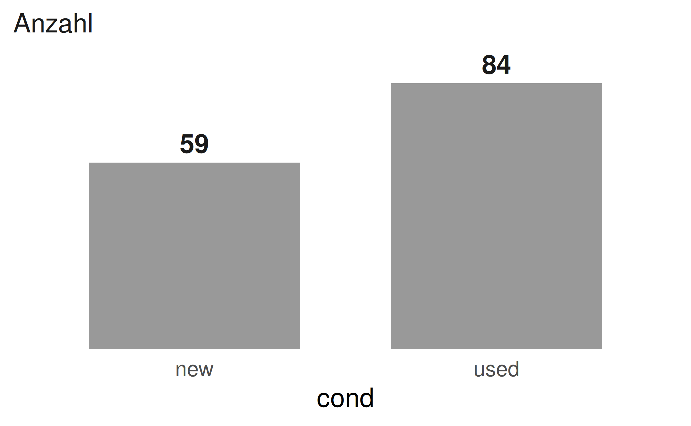
Definition: Balkendiagramm
Grafische Darstellung von Werten, meist Häufigkeiten von Kategorien (Ausprägungen nominaler Variablen), mit rechteckigen Balken; die Länge eines Balkens ist proportional zur dargestellten Häufigkeit.
Die Ausrichtung (horizontal/vertikal) ist Geschmackssache.
Verteilungen verbildlichen
Syntax: Balkendiagramm mit ggpubr
Auf Deutsch:
Nimm
mariokartund dann zähle die Ausprägungen voncondund dann zeichne ein Balkendiagramm daraus.
ggbarplot erwartet fertige Balkenhöhen — daher zuerst mit count zählen.

ggbarplot()Verteilungen verbildlichen
Verteilung einer quantitativen Variable
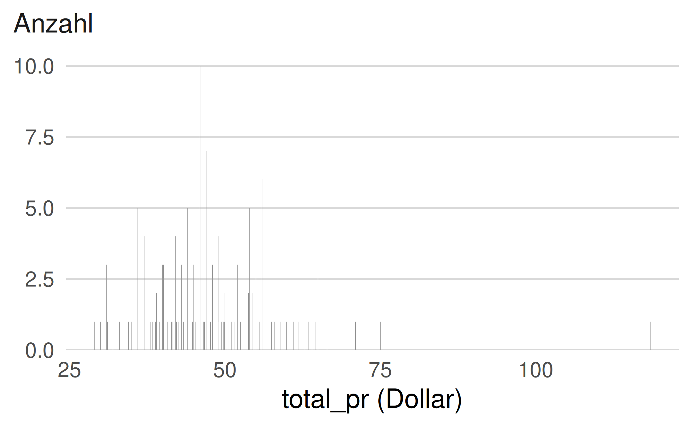
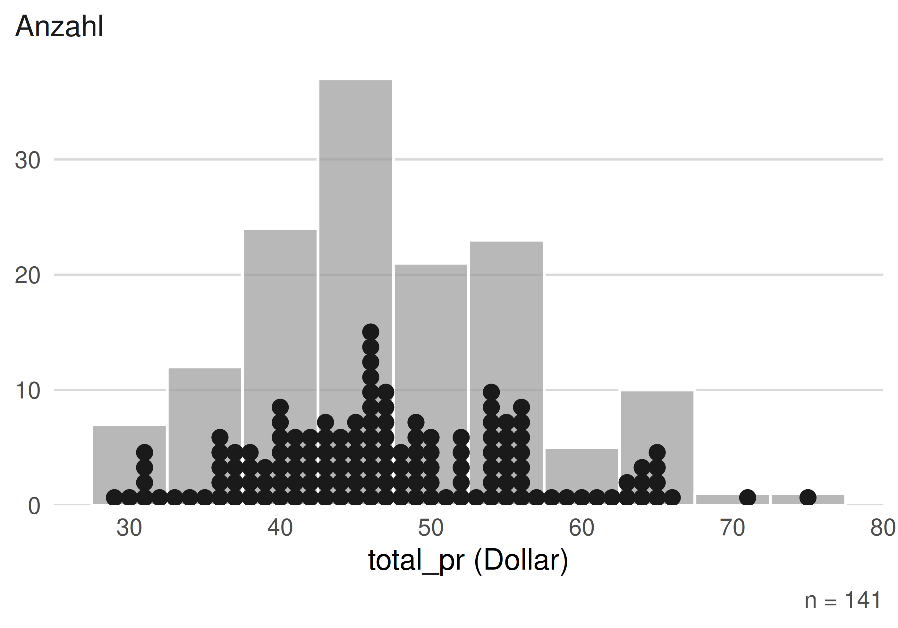
Bei vielen Ausprägungen ist ein Balkendiagramm unübersichtlich (links). Lösung: Werte in Gruppen (Klassen) zusammenfassen, z. B. 0–5 Dollar, 6–10 Dollar, … — das ergibt ein Histogramm (rechts; Punkte = Einzelwerte).
Verteilungen verbildlichen
Definition: Histogramm
Definition: Histogramm
Ein Histogramm ist ein Diagramm zur Darstellung der Häufigkeitsverteilung einer quantitativen Variablen. Die Daten werden in Gruppen (Klassen) eingeteilt, die durch je einen Balken dargestellt werden; die Balkenhöhe zeigt die Häufigkeit pro Klasse (bei konstanter Balkenbreite).
Verteilungen verbildlichen
Wie viele Balken? Nicht zu viele, nicht zu wenige
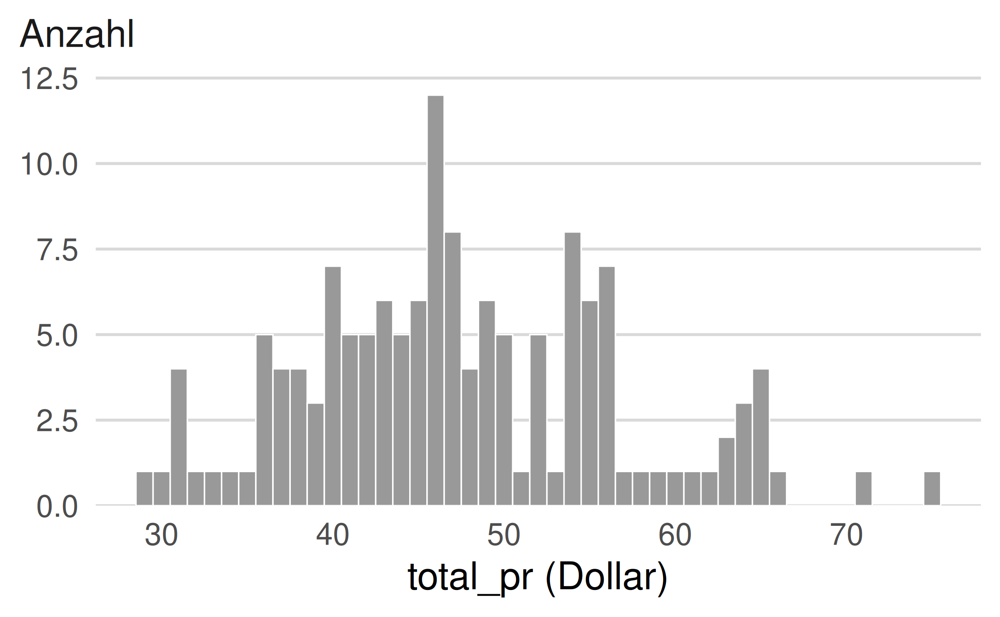
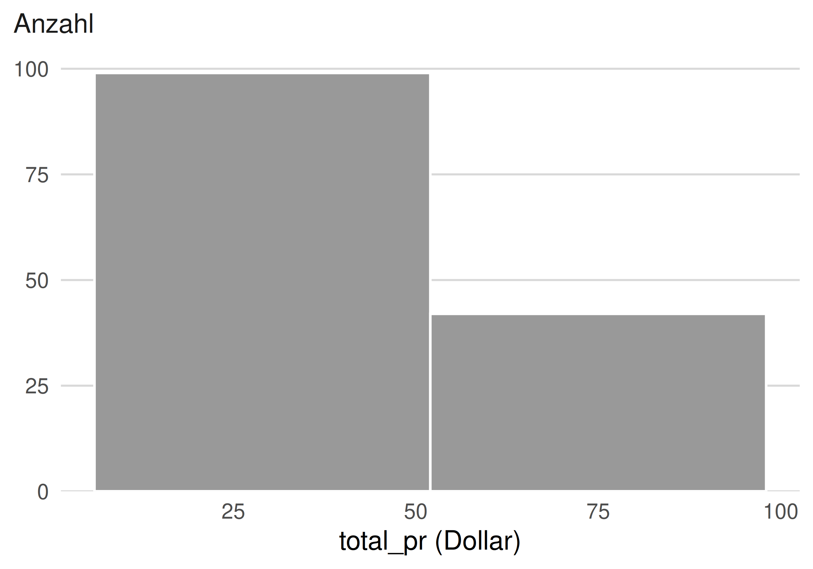
Es gibt keine feste Regel für die Balkenanzahl — nur: nicht zu grob, nicht zu fein.
Verteilungen verbildlichen
Histogramm vs. Dichtediagramm
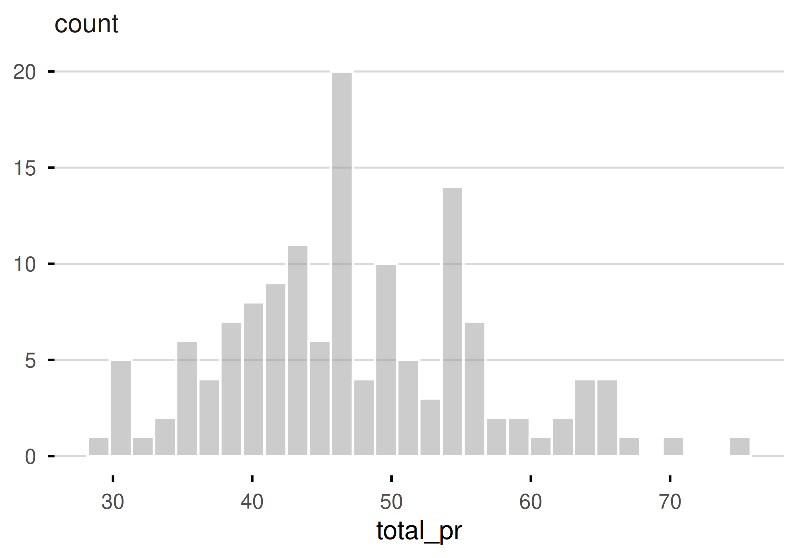
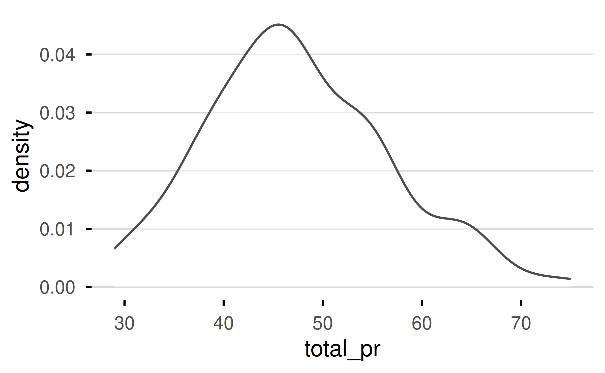
Verteilungen verbildlichen
Definition: Dichtediagramm
Definition: Dichtediagramm
Ein Dichtediagramm visualisiert die Verteilung einer stetigen Variablen. Im Gegensatz zum Histogramm wird der Verlauf geglättet, so kann Rauschen (Zufallsschwankung) besser ausgeblendet werden. (Dichte: relative Anzahl der Beobachtungen pro Einheit der X-Variablen.)

total_prVerteilungen verbildlichen
Verteilungsformen
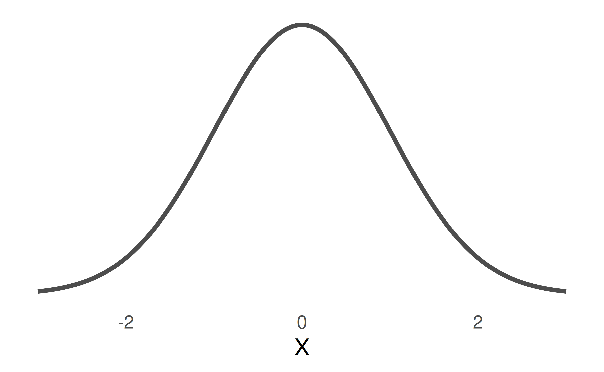
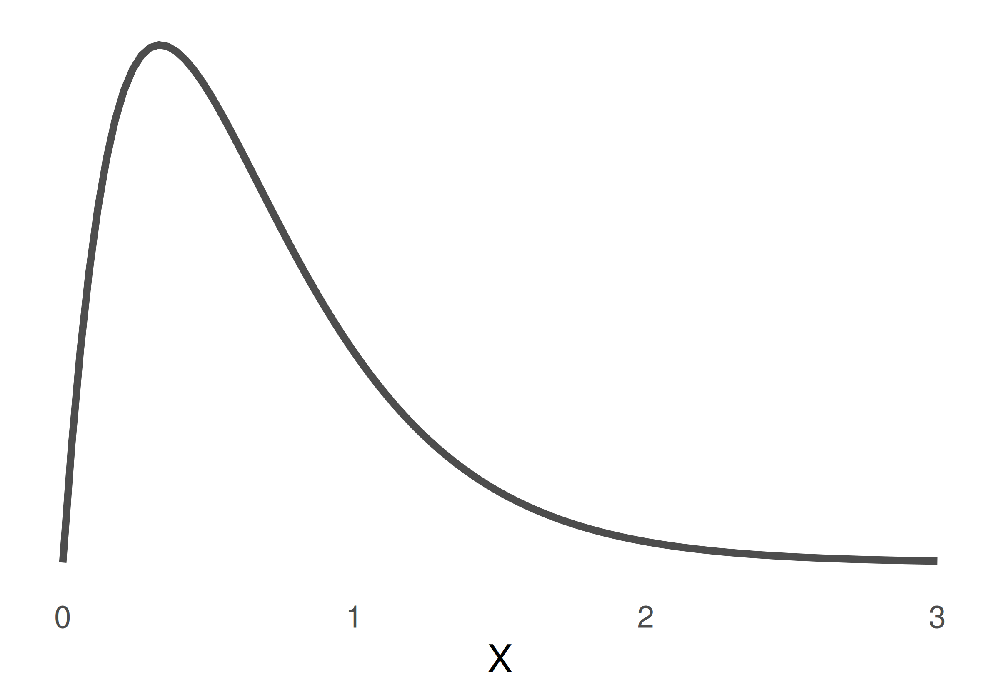

Verteilungen unterscheiden sich in Lage (“typischer” Wert), Streuung und Form (symmetrisch vs. schief).
Verteilungen verbildlichen
Spezialfall Normalverteilung
Definition: Normalverteilung
Definition: Normalverteilung
Normalverteilungen haben eine charakteristische, symmetrische Glockenform. Sie unterscheiden sich in Mittelwert \(\mu\) und Streuung \(\sigma\) — diese beiden Parameter bestimmen den Graphen vollständig.
Kurzschreibweise: \(X \sim \mathcal{N}(\mu, \sigma)\)

Spezialfall Normalverteilung
Eigenschaften und Beispiele
Eine Normalverteilung ist
- symmetrisch, glockenförmig, stetig, unimodal,
- Mittelwert, Median und Modus sind identisch,
- vollständig beschrieben durch \(\mu\) und \(\sigma\).
Beispiele: Körpergröße (von Männern bzw. Frauen), IQ-Werte, einige Prüfungsergebnisse, Messfehler, Lebensdauer von Glühbirnen, Gewicht von Brotlaiben, Brustumfang schottischer Soldaten (Lyon, 2014) …
Spezialfall Normalverteilung
68-95-99.7-Prozentregel

Kennt man \(\mu\) und \(\sigma\), weiß man, welcher Anteil der Fläche unter der Kurve in einem Bereich liegt:
- \(68\,\%\) im Bereich \(\mu\pm 1 \cdot \sigma\)
- \(95\,\%\) im Bereich \(\mu\pm 2 \cdot \sigma\)
- \(99{.}7\,\%\) im Bereich \(\mu\pm 3 \cdot \sigma\)
Spezialfall Normalverteilung
Beispiel: IQ-Verteilung
\(IQ \sim \mathcal{N}(100,15)\)

Welcher IQ-Wert wird von 75 %, 50 %, 25 %, 5 %, 1 % der Leute nicht überschritten?
Spezialfall Normalverteilung
Entstehung einer Normalverteilung
Definition: Entstehung einer Normalverteilung
Wenn sich eine Variable \(X\) als Summe mehrerer, unabhängiger, etwa gleich starker Summanden ergibt, kann man erwarten, dass \(X\) tendenziell normalverteilt ist.
Anschaulich zeigt das Galton-Brett, wie aus vielen kleinen Zufallsereignissen eine Glockenkurve entsteht.
Spezialfall Normalverteilung
Zusammenhänge verbildlichen
Zusammenhang nominaler Variablen: Beispiele
- Hängt Berufserfolg (Führungskraft ja/nein) mit dem Geschlecht zusammen?
- Hängt der Beruf des Vaters mit dem Schulabschluss des Kindes zusammen?
- Gibt es einen Zusammenhang zwischen bevorzugter Automarke und Parteipräferenz?
Im Online-Auktionshaus fragen wir: Liegt ein Produktfoto (stock_photo) eher bei neuen als bei gebrauchten Spielen bei?
Zusammenhänge verbildlichen
Zusammenhang nominaler Variablen
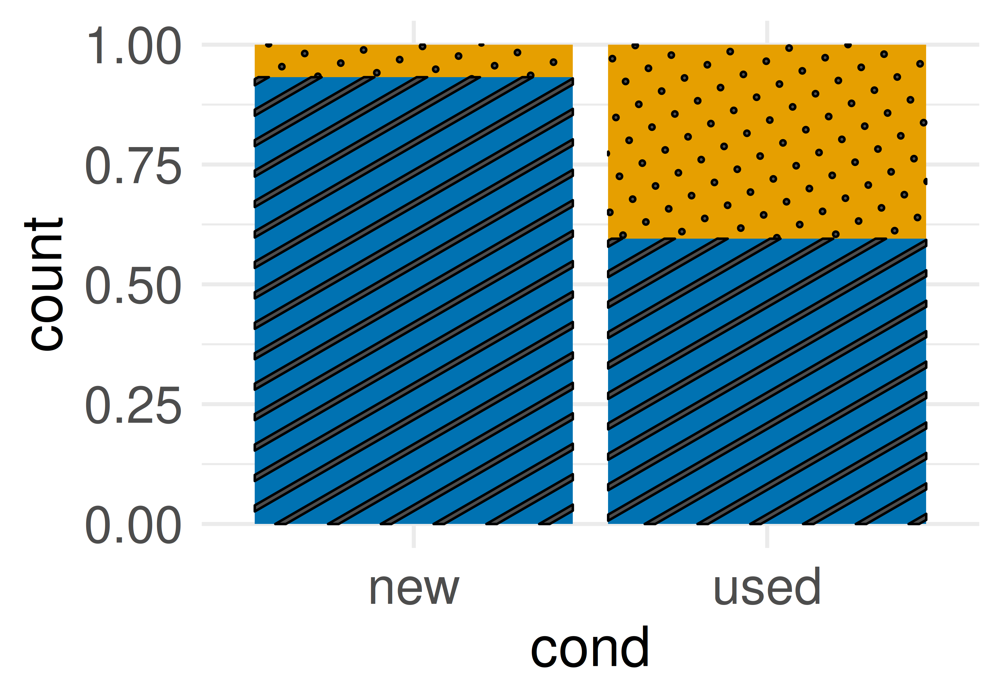
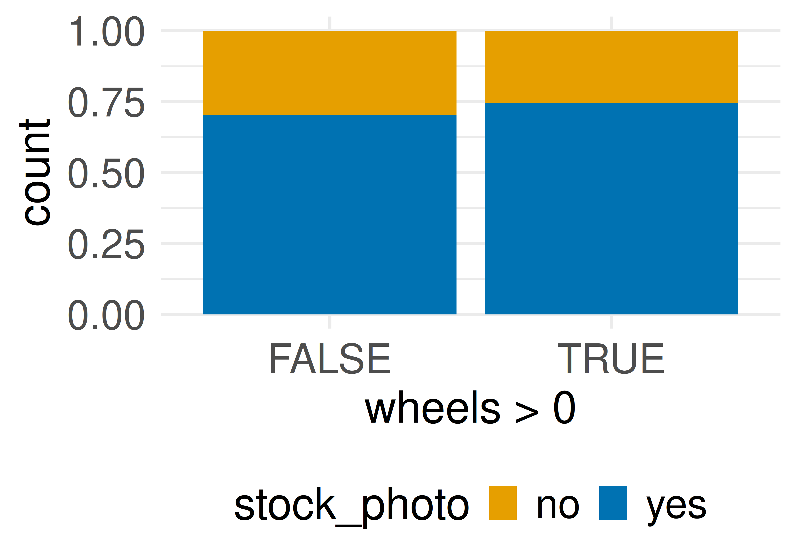
- Links: Bei neuen Spielen ist fast immer (ca. 90 %) ein Foto dabei, bei gebrauchten nur bei gut der Hälfte —
condundstock_photohängen zusammen. - Rechts: Mit oder ohne Lenkrad (
wheels > 0) — der Fotoanteil liegt jeweils bei ca. 70–75 %: (fast) kein Zusammenhang. - Faustregel: Unterscheiden sich die “Füllhöhen”, gibt es einen Zusammenhang.
Zusammenhänge verbildlichen
Gefüllte Balkendiagramme
- Geeignet, wenn (mindestens) eine der beiden Variablen nur zwei Ausprägungen hat.
- Die Balken sollten auf gleiche Länge (100 %) ausgerichtet sein.

Zusammenhänge verbildlichen
Zusammenhang bei metrischen Variablen: Streudiagramm
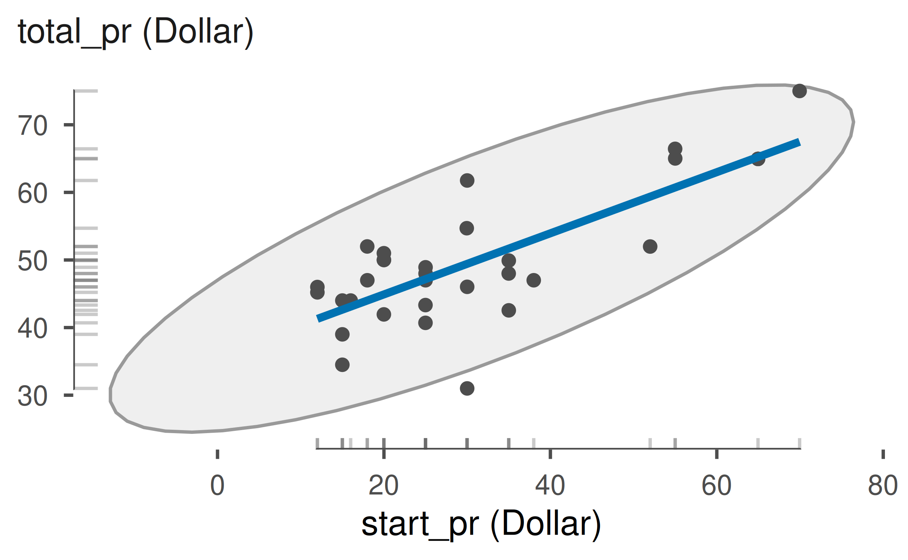
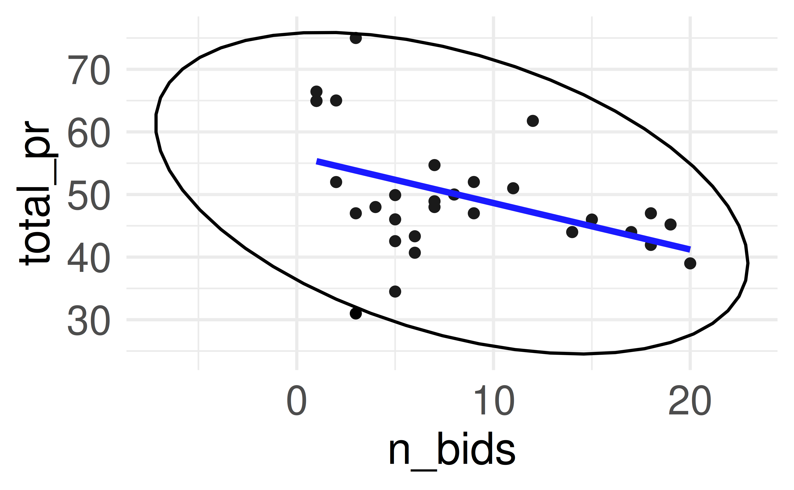
- Links: Je höher der Startpreis (
start_pr), desto höher tendenziell der Abschlusspreis (total_pr). - Rechts: Je mehr Gebote (
n_bids), desto geringer tendenziell der Abschlusspreis. - Die Trendgerade (Regressionsgerade) zeigt die Richtung; die Ellipse zeigt, wie eng die Daten um sie streuen.
Zusammenhänge verbildlichen
Definition: Linearer Zusammenhang
Definition: Linearer Zusammenhang
Lässt sich die Beziehung zweier Variablen gut mit einer Geraden beschreiben, spricht man von einem linearen Zusammenhang. Ändert man eine Variable um einen bestimmten Wert, ändert sich die andere um einen proportionalen Wert. Gleichsinnige (positive) Zusammenhänge zeigen aufsteigende Trendgeraden \(\nearrow\); gegensinnige (negative) zeigen absteigende Trendgeraden \(\searrow\).
Zusammenhänge verbildlichen
Auch nicht-lineare Zusammenhänge gibt es

Der Einfachheit halber konzentrieren wir uns auf lineare Zusammenhänge.
Zusammenhänge verbildlichen
Stärke und Richtung von Zusammenhängen

Schmale Ellipsen (“Baguette”) = starker Zusammenhang; breite Ellipsen (“Torte”) = schwacher Zusammenhang. Die Zahl je Teildiagramm ist der Korrelationskoeffizient \(r\): Vorzeichen = Richtung, Betrag = Stärke.
Zusammenhänge verbildlichen
Faustregeln für den Korrelationskoeffizienten
Nach Cohen (1992):
- \(r\approx 0\): kein Zusammenhang
- \(r \pm .1\): schwacher Zusammenhang
- \(r \pm .3\): mittlerer Zusammenhang
- \(r \pm .5\): starker Zusammenhang
- \(r = 1\): perfekter Zusammenhang

Zusammenhänge verbildlichen
Mehrere Zusammenhänge auf einen Blick
Erst ohne Extremwerte schält sich ein klares Bild heraus: start_pr und wheels hängen am stärksten mit total_pr zusammen.

Zusammenhänge verbildlichen
Unterschiede verbildlichen
Unterschiede bei nominalen Variablen
Für nominale Variablen eignen sich Balkendiagramme sowohl für Zusammenhänge als auch für Unterschiede: Das gefüllte Balkendiagramm zu cond und stock_photo zeigt genau genommen den Unterschied im Fotoanteil zwischen neuen und gebrauchten Spielen.
Tortendiagramme sind dagegen ungeeignet: Flächenvergleiche sind für das Auge schwer.
Unterschiede verbildlichen
Unterschiede bei quantitativen Variablen
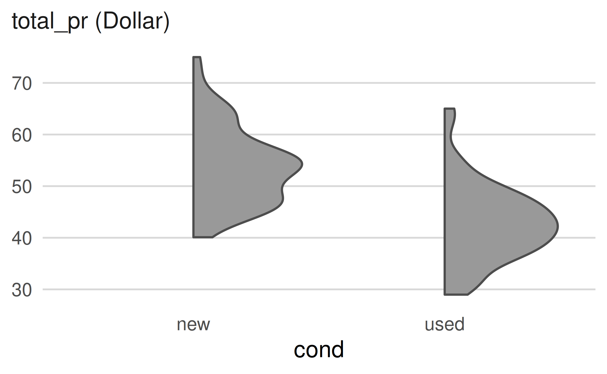
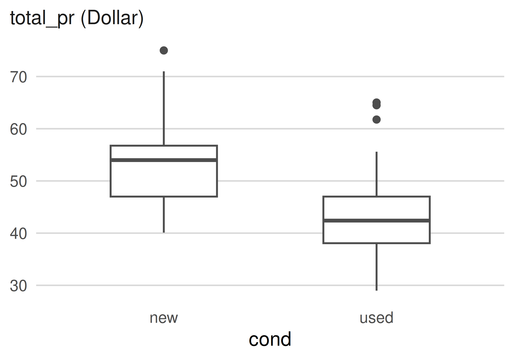
- Unterscheiden sich zwei Gruppen (neu vs. gebraucht) deutlich in der Zielvariablen (
total_pr)? - Der Boxplot (rechts) zeigt die gleichen Verteilungen wie links — vereinfacht und gröber.
- Die Punkte neben Verteilung bzw. Box sind die Rohdaten: ein Punkt pro Spiel.
- Was ein “deutlicher” Unterschied ist, ist keine statistische, sondern eine inhaltliche Frage.
Unterschiede verbildlichen
Definition: Boxplot
Definition: Boxplot
Der Boxplot ist eine Vereinfachung bzw. Zusammenfassung eines Histogramms. Damit stellt er ebenfalls eine Verteilung (einer metrischen Variablen) dar.

Unterschiede verbildlichen
Anatomie des Boxplots
- Dicker Strich: Median der Verteilung.
- Enden der Box: 1. Quartil (hier 41) und 3. Quartil (hier 54) — die Breite der Box ist der Interquartilsabstand (IQR), die Streuung der inneren 50 %.
- Antennen: Streuung der kleinsten bzw. größten 25 % der Werte, begrenzt auf das 1,5-fache der Boxlänge.
- Einzelne Punkte: Extremwerte außerhalb der Antennen.
- Median mittig in der Box und gleich lange Antennen → Verteilung symmetrisch; sonst schief.
Unterschiede verbildlichen
Boxplot: Preis nach Anzahl Lenkräder
ggboxplotgruppiertwheelsohnehin nach jedem Wert (0–4).factor(wheels)ist trotzdem guter Stil: dokumentiert die Absicht und verhindert, dass spätere Analysenwheelsals stetig behandeln.- Lenkräder und Preis hängen positiv zusammen — aber für 3 und 4 Lenkräder gibt es nur wenige Daten: Vorsicht bei der Interpretation!

Unterschiede verbildlichen
Raindrop-Diagramm
Ein Raindrop-Diagramm (Raincloud-Plot) kombiniert drei Sichten: Dichte als “Wolke”, schmaler Boxplot, Rohdaten als “Regentropfen”.

library(ggdist)
mariokart_no_extreme |>
ggplot(aes(x = total_pr, y = cond)) +
stat_halfeye( # Wolke
fill = mittelgrau, adjust = 0.6,
height = 0.6, justification = -0.2,
.width = 0, point_colour = NA) +
geom_boxplot(width = 0.12,
outlier.shape = NA) +
stat_dots( # Tropfen
side = "bottom", justification = 1.15,
binwidth = 0.6, fill = dunkelgrau,
colour = dunkelgrau)- Neue Spiele erzielen im Median rund 10 Dollar mehr als gebrauchte — die Verteilungen überlappen sich aber deutlich.
Unterschiede verbildlichen
Gute Datendiagramme gestalten
Vier Faustregeln
Ein Datendiagramm soll eine Frage schnell und ehrlich beantworten.
- Erst die Botschaft, dann das Diagramm: Verteilung, Zusammenhang oder Unterschied? Daraus folgt der Diagrammtyp.
- Lage schlägt Fläche und Winkel: Positionen an einer gemeinsamen Achse vergleicht das Auge genau, Winkel und Flächen nur grob (Cleveland, 1993) — Balken schlagen Torten.
- Weniger ist mehr: 3D-Effekte, Schatten, farbige Hintergründe, dichte Gitter, bedeutungslose Farben lenken nur ab (Tufte, 2001).
- Direkt beschriften: verständliche Achsennamen (mit Einheit); Gruppen und Werte direkt im Diagramm statt in einer Legende.
Gute Datendiagramme gestalten
Vorher – nachher
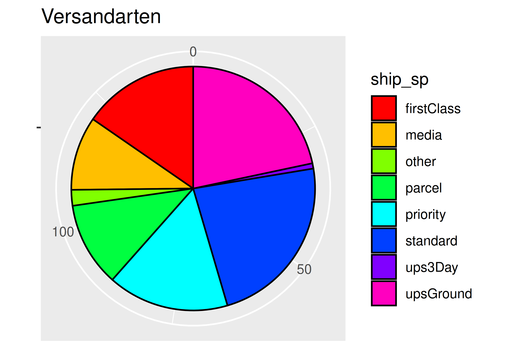
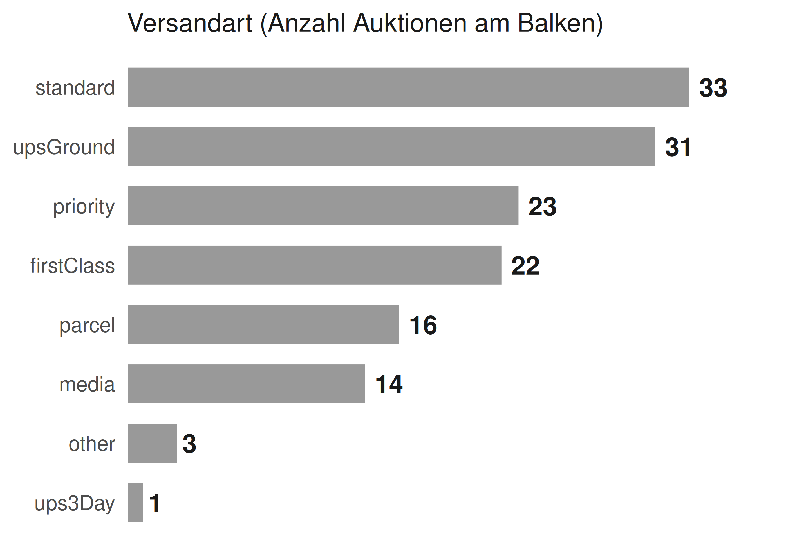
- Gleiche Daten: Versandart (
ship_sp) der Mariokart-Auktionen. Welche ist am häufigsten? - Torte:
standard(33) undupsGround(31) sind kaum zu unterscheiden; das Auge pendelt zwischen Torte und Legende. - Balken: weniger Tinte, trotzdem mehr Information — genaue Anzahl und Rangfolge.
Gute Datendiagramme gestalten
Gute Diagramme: auf einen Blick
Wichtig
Ein gutes Datendiagramm beantwortet seine Frage auf einen Blick.
- Die Kehrseite: Wer die Faustregeln absichtlich bricht, kann mit Diagrammen täuschen.
Gute Datendiagramme gestalten
Wie man mit Statistik lügt
Achsen stauchen und strecken
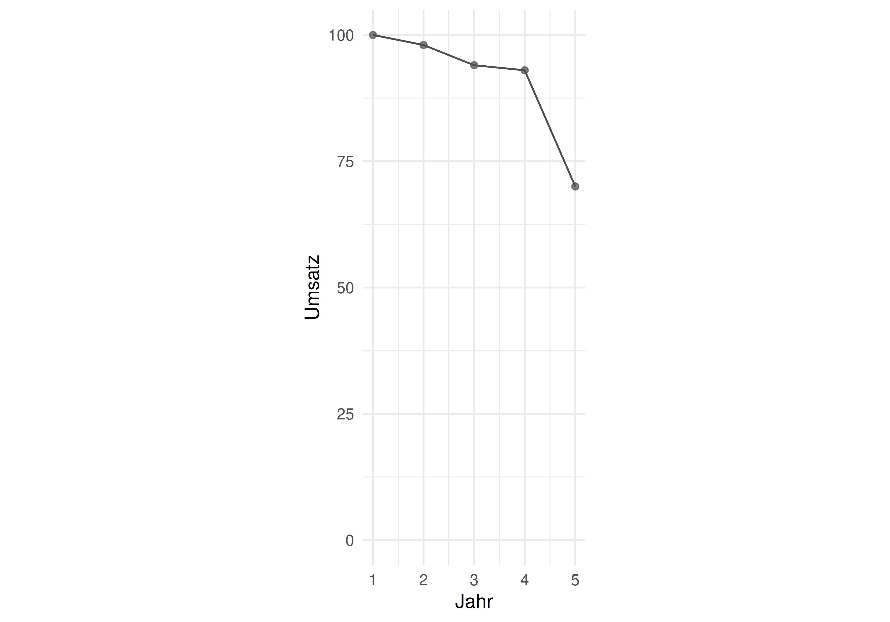
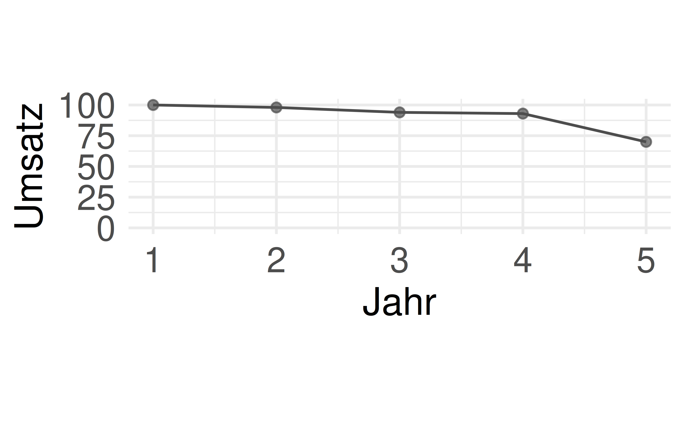
Gleiche Daten, ganz anderer Eindruck.
Wie man mit Statistik lügt
Die Y-Achse abschneiden
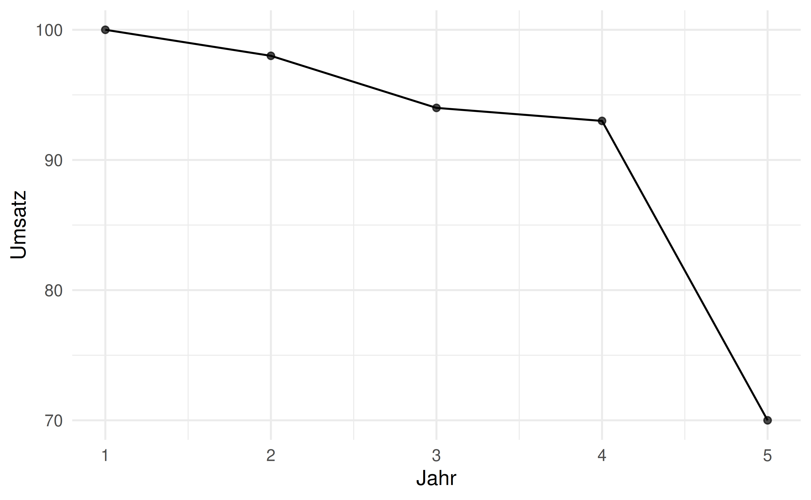
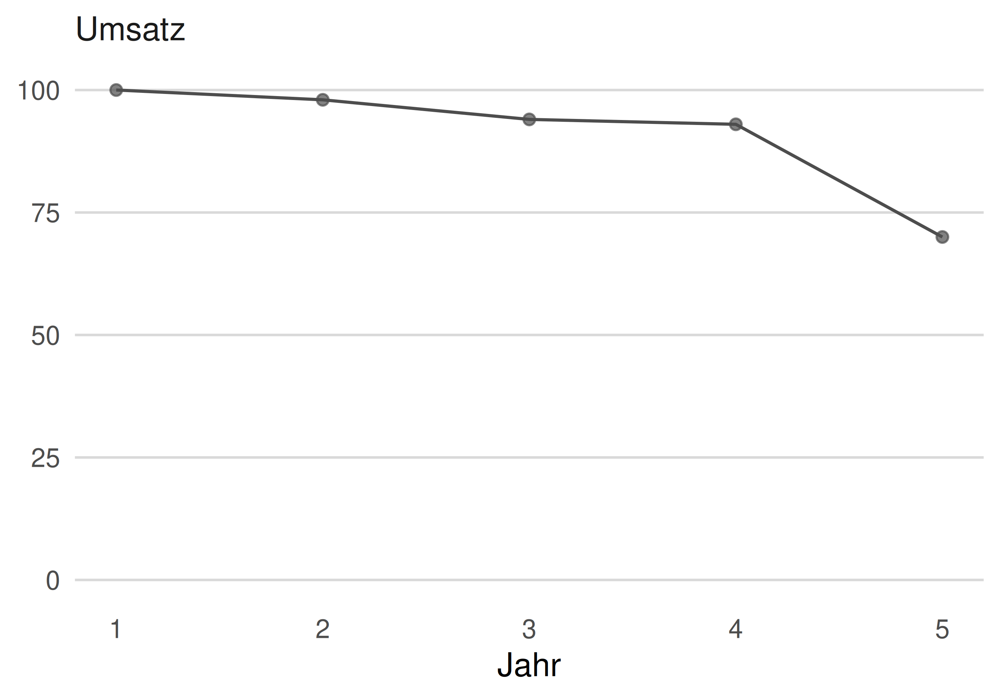
Eine abgeschnittene Y-Achse dramatisiert kleine Unterschiede.
Wie man mit Statistik lügt
Scheinkorrelationen als Kausalität verkaufen

Schokoladenkonsum hängt mit der Anzahl der Nobelpreise (pro Land) zusammen — aber nicht ursächlich. Eine Drittvariable (z. B. allgemeiner Entwicklungsstand) erklärt vermutlich beides gleichzeitig.
Wie man mit Statistik lügt
Praxisbezug
Die Stärke von Datendiagrammen

Das Diagramm zeigt die Häufigkeit von Masern vor und nach Einführung der Impfung (DeBold & Friedman, 2015; Daten: van Panhuis et al., 2013) — eine Botschaft auf einen Blick, eindrücklicher als jede Tabelle.
Tortendiagramme begegnen einem ständig — Balken sind aber meist die bessere Wahl (s. Gestaltungs-Faustregeln).
Praxisbezug
Zusammenfassung
- Datendiagramme decken auf, was reine Kennzahlen verbergen (Dino-Datensatz, Anscombes Quartett)
- Verteilung: Balkendiagramm (nominal), Histogramm/Dichtediagramm (quantitativ) — bei Normalverteilung bestimmen \(\mu\) und \(\sigma\) alles
- Zusammenhang: gefülltes Balkendiagramm (nominal), Streudiagramm (metrisch) — Stärke via Ellipsenform/Korrelation
- Unterschied: Boxplot fasst eine Verteilung kompakt zusammen (Median, Quartile, Antennen, Extremwerte)
- Gestaltung: erst die Botschaft; Lage statt Fläche/Winkel; weniger ist mehr; direkt beschriften
- Vorsicht: Diagramme lassen sich manipulieren (gestauchte Achsen, abgeschnittene Y-Achse, Scheinkorrelationen)
Literaturhinweise
Referenzen


Statistik1 — Daten verbildlichen